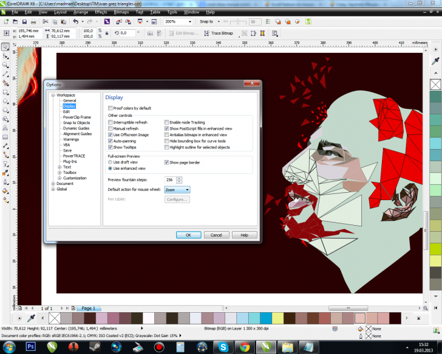
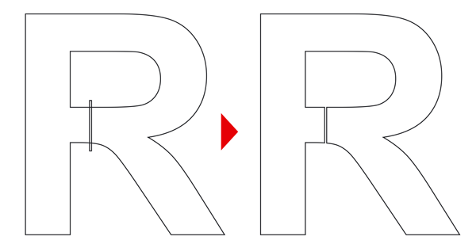

ВОПРОС / ОТВЕТ ДЛЯ НАЧИНАЮЩИХ
polzovatel-902 / 13.07.2010, 09:21/00:41
Форум:
Объясню на примере, чтоб было понятней... Открываю в кореле картинку (футболку с надписью) в формате JPG, мне нужно вытянуть из футболки надпись, т.е разъеденить файл... Говорят нужно формат изменить, еще что-то... Объясните, пожалуйста, что нужно сделать для этого...? Заранее спасибо.
Никаких особых драйверов не устанавливала, при прокрутке колесиком Корел ничего не делает, никак не реагирует. Если проблема в драйвере, то какой нужно установить?
polina. Тогда проблему надо искать где-то в самом Кореле, скорее всего. Мышь тут не причем.
polina, существуют два решения.
Первое - нужно проверить конфигурацию Корела как на скриншоте, убедитесь что колесом вызывается Zoom

Второе, это может быть известная проблема совместимости некоторых моделей мышей, вы должны установить родной драйвер. Для этого перейдите на сайт производителя вашей мыши и скачайте драйвер.
Спасибо! буду искать
Подскажите пож. Как импортировать , скажем, 10 растровых объектов на 5 стр. в определенные заданные места???
host639, если их действительно 10, а не 100 например, можно и руками. Или в чём именно сложность то?
Всем привет нужен совет по оптимизации текста. Файл делается для резки пенопласта в нём главное задать траекторию ходу струны, что я сделать и не магу Мне надо чтобы рез начинался слева внизу а не справа внизу и пунктирная линия проходила в другом месте может кто подскажет? Файл создавал в Х3 просто набором текста
LGS, а разве начальная точка задается не в самой программе резки?
Откуда взялась пунктирная линия и что она означает?
Текст перед экспортом переводился в кривые (Convert to curves)?
А если после перевода букв в кривые в Корел выделить сразу все их узлы инструментом Shape (клавиша F10) и в панели свойств инструмента задать команду Reverse Curve direction (Изменить направление кривой) – от этого что-то изменится? При этом по идее меняется порядок обработки узлов – был, например по часовой, а станет против.
Возможно, программа резки учитывает положение начального узла кривой (в Х3 никак не маркируется, а в Х5 обозначается маркером с маленькой стрелкой, показывающей направление кривой). Его положение можно поменять произвольным образом. Для этого надо выделить нужный узел, который должен стать начальным с помощью инструмента Shape и применить к нему команду Break Curve (Разбить кривую) После этого в том месте вместо одного узла появятся два, один будет начальным другой – конечным. Если это необходимо, можно объединить узлы обратно или замкнуть кривую командой Close Curve. Положение начальной точки останется тем, которое мы только что задали.
Если проблема в том, что программа назначает переход от внешнего контура к внутреннему произвольно (та самая пунктирная линия?), то разрвыв в контуре буквы можно задать принудительно в Корел.
Добавляем в нужном месте прямоугольник минимальной ширины как на картинке. Выделяем вначале прямоугольник, потом букву и применяем к ним команду Trim. Вместо двух отдельных субконтуров, которыми изначально была буква в примере, получаем один замкнутый контур.

Sokolovich спасибо за подробную инструкцию, буду пробовать. Пунктирная линия означает место где режущая струна входит во внутренний контур. Может подскажите ещё обучающее видео по этой теме. Если честно Corel познакомился неделю назад))
Спасибо
Страницы